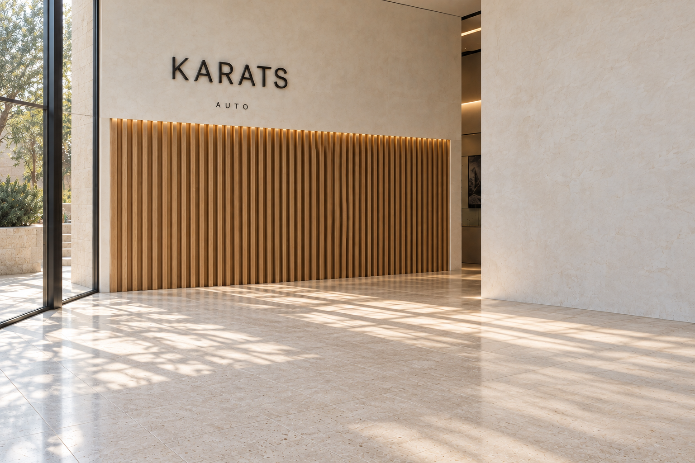
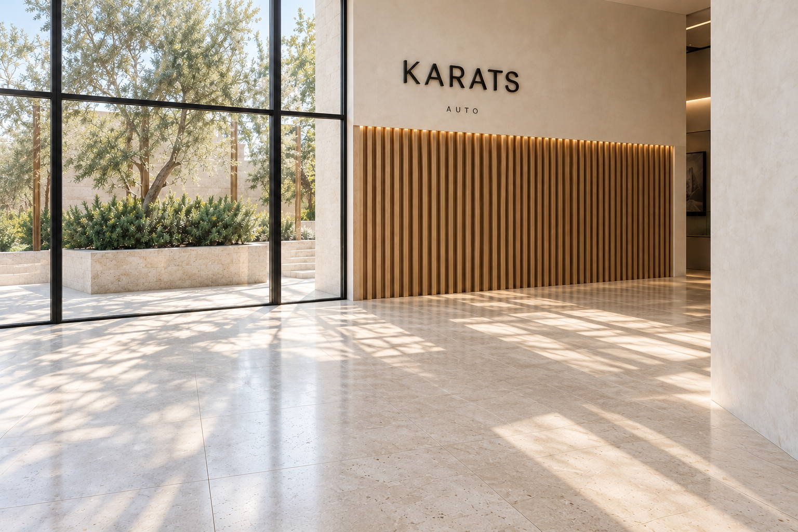
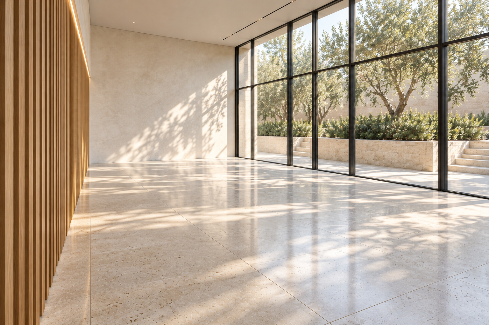

← Все версииR19 · Три новых ракурса
Сгенерированные изображения на основе пустого эталона. 1536×1024, без апскейла. Это визуальные исследования, не калиброванная съёмка готовой 3D-сцены. В обратном ракурсе геометрия дубовой стены и остекления отличается: не считать его доказанно совместимым входом Marble.
Запрошено high; провайдер сообщил low. Максимальное качество не подтверждено.
Скачать три исходных PNG одним ZIP · Промпты и инструкции R18
01 · Со стороны окон

Скачать исходный PNG02 · От штукатурной стены к саду

Скачать исходный PNG03 · Обратный косой ракурс

Скачать исходный PNG